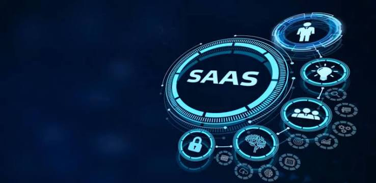

4 Mercados tecnológicos
1. SaaS y Software de gestión hostelera

Descripción
El modelo SaaS (Software as a Service) consiste en ofrecer aplicaciones informáticas a través de Internet, normalmente mediante una suscripción. Los restaurantes pueden acceder al software sin necesidad de instalar y mantener toda la infraestrutura en sus propios equipos.
Tecnologías relacioandas
- Cloud Computing.
- Ciberseguridad.
- Big Data y analítica de datos.
Ejemplo real: TheFork Manager
TheFork Manager es una plataforma de gestión para reestaurantes que permite centralizar reservas, organizar mesas, gestionar clientes y analizar el rendimiento del establecimiento.
Este tipo de solución permite a los restaurantes digitalizar su administración y mejorar la organización del servicio.
2. Restaurantes Inteligentes
Descripción
Los restaurantes inteligentes incorporan dispositivos conectados, sensores y sistemas automatizados para supervisar y controlar diferentes procesos del negocio. Estas tecnologías permiten obtener información en tiempo real y actuar ante posibles incidencias.
Tecnologías relacioandas
- Internet de las Cosas (IoT).
- Cloud Computing.
- Inteligencia Artificial.
Ejemplo real: McDonald's Francia yJRI
McDonald's Francia implantó soluciones de monotiroización mediante sensores IoT de JRI para controlar la temperatura de cámaras frigoríficas y equipos de refrigeración en sus restaurantes.